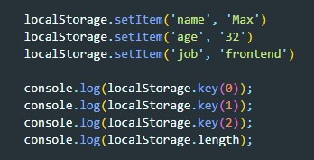
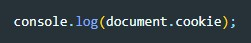
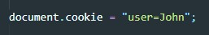
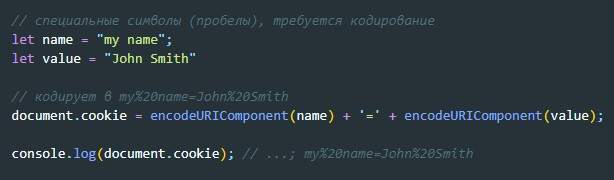
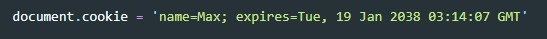
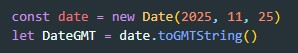
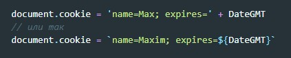
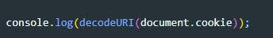

Чтобы понять, что такое localStorage, просто представьте, что где-то у вас в браузере (еще раз подчеркну, в браузере, т.е вся информация будет храниться в браузере, откроем приложение через IE и информации уже не будет) встроен такой объект, которым мы можем пользоваться. При этом данный объект не очищает значения, которые мы туда запишем, если мы перезагрузим страницу или даже совсем закроем браузер.
Что бы перечислить имена всех хранящихся значений, можно с помощью свойства length (вернет количество записей в localStorage) и метода key() (передавая ему значение от 0 до length-1 получаем имя ключа, но не значение)
Также хочется отметить, что localStorage отлично работает и с вложенными структурами, например, объектами.

Вы также должны знать, что браузеры выделяют 5мб под localStorage. И если вы его превысите — получите исключение QUOTA_EXCEEDED_ERR. Кстати, c его помощью можно проверять есть ли в вашем хранилище еще место.

storage - это событие генерируется при изменении данных хранящихся в localStorage. При этом объект события (event) получает дополнительные свойства:
Важно: событие срабатывает на всех остальных объектах window, где доступно хранилище, кроме того окна, которое его вызвало. Т.е. у нас открыто два окна с одной и той же страничкой. На первой мы выполнили обновление данных, и только на второй странице сгенерируется событие (не на первой)
Разница между localStorage заключается лишь в сроке хранения и области видимости: они определяют как долго будутхраниться данные и кому они будут доступны. В localStorage данные хранятся до тех пор пока их не почистит пользователь. В sessionStorage данные хранятся по открыта вкладка в браузере. Свойства и методы sessionStorage абсолютно такие же как и у localStorage
Значение document.cookie состоит из пар ключ=значение, разделённых ;. Каждая пара представляет собой отдельное куки
Можно запросить данные из cookie таким образом
Мы можем писать в document.cookie. Но это не просто данные, а акcессор (геттер/сеттер). Присваивание обрабатывается особым образом. Запись в document.cookie обновит только упомянутые в ней куки, но при этом не затронет все остальные. Например, этот вызов установит куки с именем user и значением John:
Если вы запустите этот код, то, скорее всего, увидите множество куки. Это происходит, потому что операция document.cookie= перезапишет не все куки, а лишь куки с вышеупомянутым именем user. Технически, и имя и значение куки могут состоять из любых символов, для правильного форматирования следует использовать встроенную функцию encodeURIComponent:
cookie записываются в режиме ключ=значение, например
expires - это зарезервированный ключ, который указывает на время хранение cookie. Дата окончания срока хранения указывается в формате GMT.
Что бы получить дату в формате GMT используем метод Date.toGMTString()
Теперь что бы указать дату хранения cookie просто обращаемсся к нашей переменной DateGMT
Важно кодировать можно только латинские буквы
Для того что бы закодировать cookie используется метод encodeURI()

Для того что бы раскодировать используем метод decodeURI()
